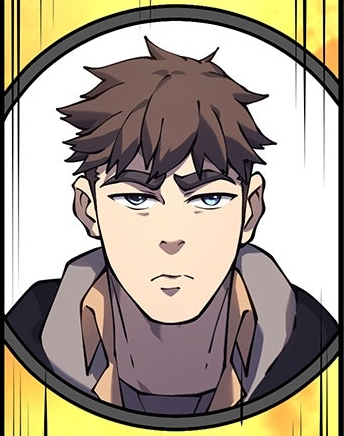
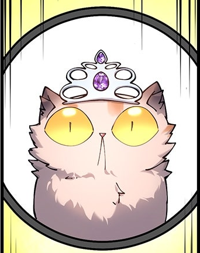

Before entering the Dungeon, Carl was a 27-year-old U.S. Coast Guard veteran who worked as a marine technician "fixing electrical systems for rich assholes and their party boats."He shared a two-bedroom apartment in Seattle, WA, with his girlfriend Beatrice and her award-winning cat, Princess Donut the Queen Anne Chonk. He hit the gym three times a week and enjoyed playing Call of Duty on PlayStation with his friend Monobrow Sam while Donut sat in his lap.He survived the Transformation because Donut escaped the apartment when he cracked open the window to smoke and he went outside to search for her, equipped only with his leather coat, boxers, Bea's ill-fitting pink Croc sandals, a Zippo lighter, and half a pack of Marlboro Red cigarettes.

Before entering the Dungeon, Princess Donut was a pedigreed, award-winning show cat who belonged to Carl's ex-girlfriend Beatrice and was bred by Bea's family. She participated in shows "almost every weekend," and a full bedroom of their two-bedroom apartment was dedicated to her ribbons, trophies, and awards. At home, Donut enjoyed yogurt and Purrfect Cat Treats, and spent her free time watching television or sitting in Carl's lap while he played video games. The morning of the transformation, Donut escapes the apartment for the first time to search for another cat from the building, and Carl braves the freezing winter night to rescue her.